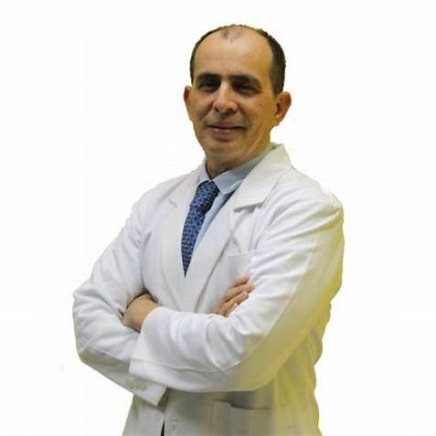

Otorrinolaringólogo en Monterrey
1quienes somos
El Dr. Jorge Treviño Garza es un Otorrinolaringólogo en Monterrey que cuenta con especialidad en Cirugía Plástica Facial, es un médico que constantemente se actualiza con el fin de mejorar sus servicios a los pacientes. Servicios del Otorrinolaringólogo en Monterrey
2nuestros servicios
- consulta
- Radiofrecuencia de Cornetes
- Cirugia endoscópica para sinusitis

Te mereces un alto nivel de atención por parte de un Otorrinolaringólogo de vanguardia, por lo que el Dr. Jorge Treviño Garza especialista en padecimiento de los oídos.
Agenda una consulta
Por WhatsApp al número 8115448285 o mediante una llamada al 8183475220
Nuestro correo: jorgetrega@gmail.com
Lunes a Sábado
9:00 a 19:00 hrs
El otorrinolaringólogo en Monterrey Jorge Treviño es ahora uno de los médicos más importantes en su campo gracias a su contribución a la investigación y la prevención.
Dirección del consultorio:
Visítanos para que seas atendido con la atención que te mereces en:
Centro de Especialidades Médicas
1er piso consultorio 126
Jose Benitez No 2704
Colonia Obispado
Monterrey NL CP 64060